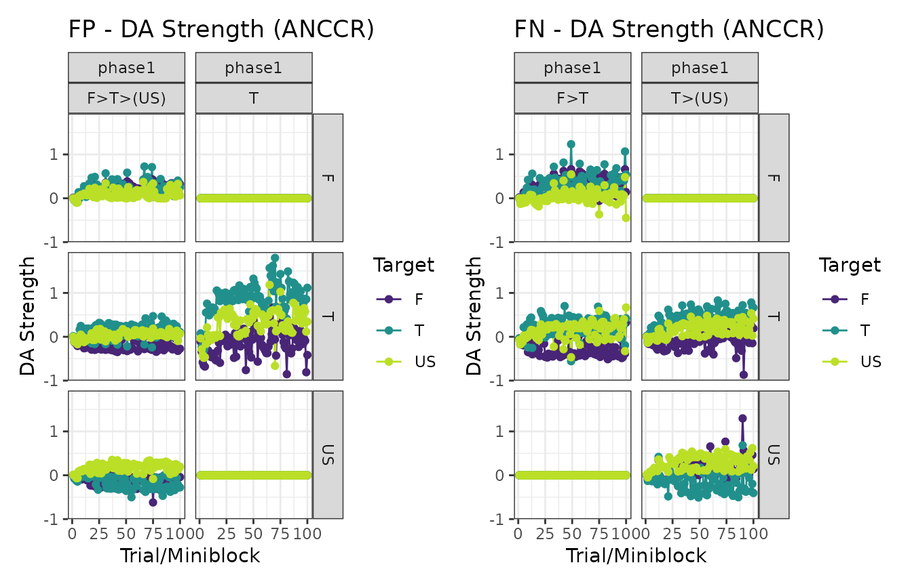

Time models in calmr
Version 0.5 of calmr introduced its first time-based
model, ANCCR (Jeong et al., 2022), and
with it, I wrote several additional tools for future time-based
models.
Changes to trial-based models
The biggest change in calmr version 0.5 is the use of
the “>” character and its effect on trial-based models, or rather,
the lack thereof.
Before, the “>” character was used to specify a single split within a trial. For example, “A>(US)” would encode the typical situation in which stimulus A is followed by the US. This was used to mimic the traditional situation in which we expect an organism to start (conditionally) responding before the US is delivered. And so, all trial-based models had two steps within each trial: an expectation step in which the first half of the trial retrieved (and responded to) absent stimuli, and a learning step, in which all stimuli in the trial were associated with each other. The first pass is no more (so start throwing extinction trials, or better yet, probe trials with the “#” character to test your associations).
Specifying a design for time-based models
The designs for time-based models are nearly identical to those for trial-based models. However, clever use of the “>” character will enrich them. Let’s specify a serial feature discrimination experiment:
library(calmr)
#>
#> Attaching package: 'calmr'
#> The following object is masked from 'package:base':
#>
#> parse
fpfn <- data.frame(
group = c("FP", "FN"),
phase1 = c("100F>T>(US)/100T", "100F>T/100T>(US)"),
r1 = c(TRUE, TRUE)
)
parse_design(fpfn)
#> CalmrDesign built from data.frame:
#> group phase1 r1
#> 1 FP 100F>T>(US)/100T TRUE
#> 2 FN 100F>T/100T>(US) TRUE
#> ----------------
#> Trials detected:
#> group phase trial_names trial_repeats is_test stimuli
#> 1 FP phase1 F>T>(US) 100 FALSE F;T;US
#> 2 FP phase1 T 100 FALSE T
#> 3 FN phase1 F>T 100 FALSE F;T
#> 4 FN phase1 T>(US) 100 FALSE T;USWe can manually specify the timing for the above experiment by
calling the get_timings() function. Manipulating the list
returned by that function will result in a manipulation of the timing
between the experimental events.
ts <- get_timings(fpfn, model = "ANCCR")
ts
#> $use_exponential
#> [1] TRUE
#>
#> $trial_ts
#> trial post_trial_delay mean_ITI max_ITI
#> 1 F>T>(US) 1 30 90
#> 2 T 1 30 90
#> 3 F>T 1 30 90
#> 4 T>(US) 1 30 90
#>
#> $transition_ts
#> trial transition transition_delay
#> 1 F>T>(US) F>T 1
#> 2 F>T>(US) T>(US) 1
#> 3 F>T F>T 1
#> 4 T>(US) T>(US) 1And now let’s get the parameters for the ANCCR model.
pars <- get_parameters(fpfn, model = "ANCCR")
# increase learning rates
pars$alpha_reward <- 0.8
pars$alpha <- 0.08
# increase sampling interval to speed up the model
pars$sampling_interval <- 5
pars
#> $reward_magnitude
#> F T US
#> 1 1 1
#>
#> $betas
#> F T US
#> 1 1 1
#>
#> $cost
#> [1] 0
#>
#> $temperature
#> [1] 1
#>
#> $threshold
#> [1] 0.6
#>
#> $k
#> [1] 1
#>
#> $w
#> [1] 0.5
#>
#> $minimum_rate
#> [1] 0.001
#>
#> $sampling_interval
#> [1] 5
#>
#> $use_exact_mean
#> [1] 0
#>
#> $t_ratio
#> [1] 1.2
#>
#> $t_constant
#> [1] NA
#>
#> $alpha
#> [1] 0.08
#>
#> $alpha_reward
#> [1] 0.8
#>
#> $use_timed_alpha
#> [1] 0
#>
#> $alpha_exponent
#> [1] 1
#>
#> $alpha_init
#> [1] 1
#>
#> $alpha_min
#> [1] 0
#>
#> $add_beta
#> [1] 0
#>
#> $jitter
#> [1] 1Let’s make the model’s experience and look at the first 20 entries.
experiment <- make_experiment(fpfn,
parameters = pars,
timings = ts,
model = "ANCCR"
)
head(experiences(experiment)[[1]], 20)
#> model group phase tp tn is_test block_size trial stimulus time reward_mag
#> 1 ANCCR FP phase1 1 F>T>(US) FALSE 2 1 F 21.49560 1
#> 2 ANCCR FP phase1 1 F>T>(US) FALSE 2 1 T 22.49560 1
#> 3 ANCCR FP phase1 1 F>T>(US) FALSE 2 1 US 23.49560 1
#> 4 ANCCR FP phase1 2 T FALSE 2 2 T 39.52794 1
#> 5 ANCCR FP phase1 1 F>T>(US) FALSE 2 3 F 65.66594 1
#> 6 ANCCR FP phase1 1 F>T>(US) FALSE 2 3 T 66.66594 1
#> 7 ANCCR FP phase1 1 F>T>(US) FALSE 2 3 US 67.66594 1
#> 8 ANCCR FP phase1 2 T FALSE 2 4 T 77.55628 1
#> 9 ANCCR FP phase1 2 T FALSE 2 5 T 84.98901 1
#> 10 ANCCR FP phase1 1 F>T>(US) FALSE 2 6 F 148.43723 1
#> 11 ANCCR FP phase1 1 F>T>(US) FALSE 2 6 T 149.43723 1
#> 12 ANCCR FP phase1 1 F>T>(US) FALSE 2 6 US 150.43723 1
#> 13 ANCCR FP phase1 2 T FALSE 2 7 T 154.71445 1
#> 14 ANCCR FP phase1 1 F>T>(US) FALSE 2 8 F 201.64629 1
#> 15 ANCCR FP phase1 1 F>T>(US) FALSE 2 8 T 202.64629 1
#> 16 ANCCR FP phase1 1 F>T>(US) FALSE 2 8 US 203.64629 1
#> 17 ANCCR FP phase1 2 T FALSE 2 9 T 246.28198 1
#> 18 ANCCR FP phase1 1 F>T>(US) FALSE 2 10 F 257.93853 1
#> 19 ANCCR FP phase1 1 F>T>(US) FALSE 2 10 T 258.93853 1
#> 20 ANCCR FP phase1 1 F>T>(US) FALSE 2 10 US 259.93853 1As you can see above, there are several rows per trial, each specifying a different stimulus. Time-based models like ANCCR run over a time log because they make ample use of the temporal difference between events.
Let’s run the model and see some plots.
experiment <- run_experiment(experiment)
# Action values
patch_plots(plot(experiment, type = "action_values"))
# ANCCR
patch_plots(plot(experiment, type = "anccrs"))
# Dopamine transients
patch_plots(plot(experiment, type = "dopamines"))
And that’s it! Easy, right?